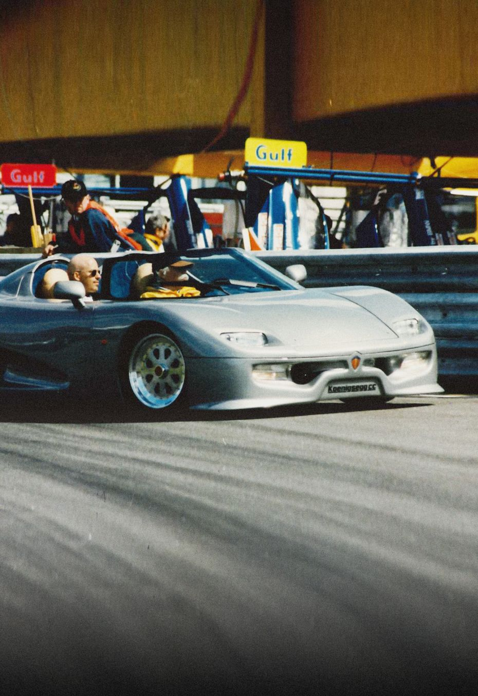

koenigsegg
cc850
discoverroad legal track legend
explore past and present modelsworlds first mega gt for four
explore past and present modelstechnological achievements
in-house innovation

Staying ahead of the curve in a very competitive e-mobility landscape in true Koenigsegg fashion, we are offering our ground-breaking components to visionary clientele. Sharing this technology enables Koenigsegg to have a positive impact on CO2 reduction
about us
why we do what we do

every single detail of a koenigsegg car is measured against our continuing goal: to enhance vehicle performance.
our history
delivering on a singular vision
on August 12, 1994, a 22 year old Christian von Koenigsegg decided to follow his dream and build the world's greatest sports car. Koenigsegg Automotive is born.